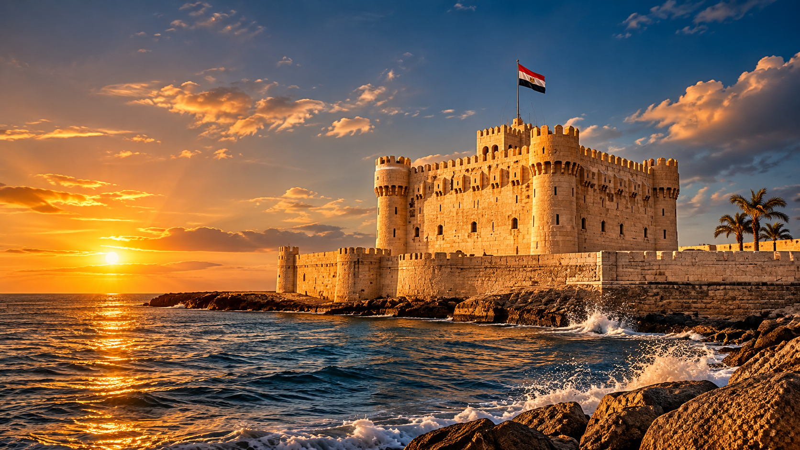
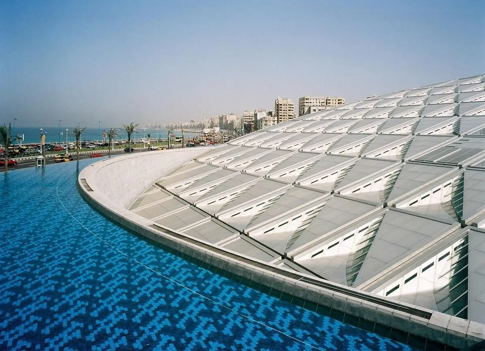
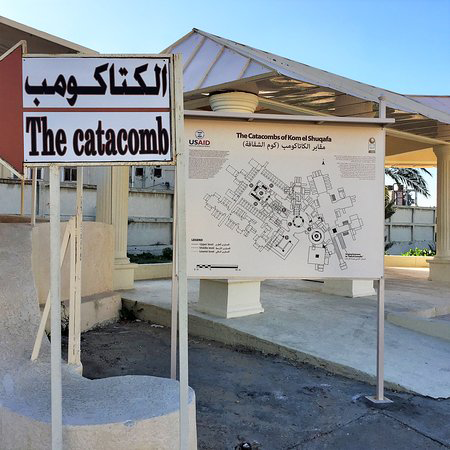

GLORY TOURS
GLORY TOURS
01 / THE COAST
Qaitbay Citadel
Visit the iconic fortress overlooking the Mediterranean, built on the historic site of Alexandria's ancient Lighthouse. Enjoy the sea views and explore this remarkable coastal landmark.
Discover Alexandria's coastal history, world-famous library and fascinating ancient underground tombs.
Explore three remarkable landmarks in Alexandria. The suggested visit order may be adjusted according to opening hours, access and local conditions.

Visit the iconic fortress overlooking the Mediterranean, built on the historic site of Alexandria's ancient Lighthouse. Enjoy the sea views and explore this remarkable coastal landmark.

Discover the striking modern Bibliotheca Alexandrina, a cultural landmark celebrating knowledge, learning and the legacy of the ancient Library of Alexandria. Entry to exhibitions and facilities is subject to opening hours and ticket availability.

Explore one of Alexandria's most fascinating archaeological sites, known for its underground chambers and distinctive blend of Egyptian, Greek and Roman artistic influences.
Message Glory Tours to ask about the package, availability and a personalized quotation.
BOOK THIS TOUR VIA WHATSAPP ↗